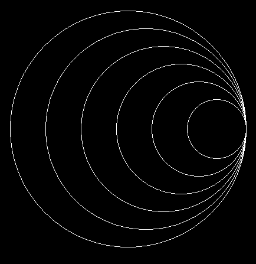

Выполните работу либо в Pixel либо в онлайн-платформе Khan Academy
--------------I вариант------------------
- При помощи любого цикла постройте фигуру

- Ввести двумерный массив из n строк и m столбцов. Заменить все неотрицательные числа на нули. Вывести массив после замен.
- Ввести двумерный массив из n строк и m столбцов. Заменить нулевую строку на вторую. Вывести массив после замены.
--------------II вариант------------------
- При помощи любого цикла постройте фигуру

- Ввести двумерный массив из n строк и m столбцов. Заменить все кратные 3 числа на -1. Вывести массив после замен.
- Ввести двумерный массив из n строк и m столбцов. Прибавить к нулевой строке вторую. Вывести массив после операции.
--------------III вариант------------------
- При помощи любого цикла постройте фигуру
- Ввести двумерный массив из n строк и m столбцов. Подсчитать кол-во неположительных чисел в нем. Вывести это кол-во.
- Ввести двумерный массив из n строк и m столбцов. Вычесть из нулевой строки вторую. Вывести массив после операции.
--------------IV вариант------------------
- При помощи любого цикла постройте фигуру
- Ввести двумерный массив из n строк и m столбцов. Заменить все неположительные числа на нули. Вывести массив после замен.
- Ввести двумерный массив из n строк и m столбцов. Заменить нулевой столбец на второй. Вывести массив после замены.
--------------V вариант------------------
- При помощи любого цикла постройте фигуру 
- Ввести двумерный массив из n строк и m столбцов. Подсчитать кол-во кратных 5 чисел в нем. Вывести это кол-во.
- Ввести двумерный массив из n строк и m столбцов. Прибавить к нулевому солбцу второй. Вывести массив после операции.
--------------VI вариант------------------
- При помощи любого цикла постройте фигуру
- Ввести двумерный массив из n строк и m столбцов. Если в первом столбце есть хотя бы 1 положительное число, вывести YES. Иначе вывести NO.
- Ввести двумерный массив из n строк и m столбцов. Вычесть из нулевого столбца второй. Вывести массив после операции.
--------------VII вариант------------------
- При помощи любого цикла постройте фигуру

- Ввести двумерный массив из n строк и m столбцов. Подсчитать кол-во неотрицательных чисел в нем. Вывести это кол-во.
- Ввести двумерный массив из n строк и m столбцов. Заменить нулевой столбец на первый. Вывести массив после замены.
--------------VIII вариант------------------
- При помощи любого цикла постройте фигуру
- Ввести двумерный массив из n строк и m столбцов. Заменить все кратные 7 числа на единицы. Вывести массив после замен.
- Ввести двумерный массив из n строк и m столбцов. Прибавить ко нулевой строке первую. Вывести массив после операции.
--------------IX вариант------------------
- При помощи любого цикла постройте фигуру
- Ввести двумерный массив из n строк и m столбцов. Заменить все некратные 4 числа на нули. Вывести массив после замен.
- Ввести двумерный массив из n строк и m столбцов. Вычесть из нулевой строки вторую. Вывести массив после операции.
--------------X вариант------------------
- При помощи любого цикла постройте фигуру
- Ввести двумерный массив из n строк и m столбцов. Подсчитать кол-во некратные 5 чисел в нем. Вывести это кол-во.
- Ввести двумерный массив из n строк и m столбцов. Заменить нулевую строку на первую. Вывести массив после замены.
--------------XI вариант------------------
- При помощи любого цикла постройте фигуру
- Ввести двумерный массив из n строк и m столбцов. Заменить все единицы на нули. Вывести массив после замен.
- Ввести двумерный массив из n строк и m столбцов. Прибавить к второму столбцу нулевой. Вывести массив после операции.
--------------XII вариант------------------
- При помощи любого цикла постройте фигуру
- Ввести двумерный массив из n строк и m столбцов. Заменить все некратные 3 числа на -1. Вывести массив после замен.
- Ввести двумерный массив из n строк и m столбцов. Вычесть из нулевого столбца первый. Вывести массив после операции.